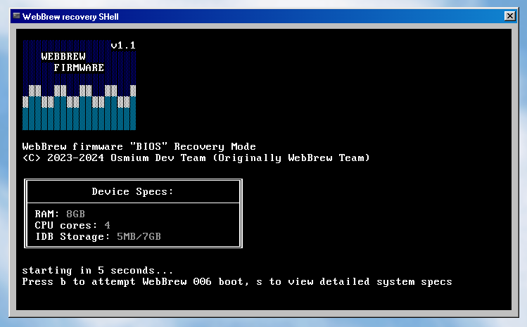

If you want to skip my yap, go here
To preface this, let me say thank you to all the original WebBrew beta testers (in modern discord usernames):
The project couldn't have gone out of the prototype stage faster without you guy's help.
[LOST MEDIA] Has been lost sometime between release and now
[Available on GH] available in the WebBrew releases archive here.
Release Date: 9/16/2023
The first iteration of the WebBrew Launcher. Only had IodineGBA
These older WebBrew releases focused on testing the ABE Payload Loader.
Changelog
Image of the first WBL (its from a later release, but it still looked like that at the time)

Release Date: Somewere after p001 but before October (WB was getting many consecutive releases at the time, and since the files are lost, I cant get a definitive release date)
Small update, added eaglercraft
Changelog
Release Date: somewere between the last release and 12/17/2023
While the original files are lost, WebBrew p004 still has some of those files intact. Ill release a replacement with most of those files in the archive GH (see the key above)
This version added a completely new IodineGBA gui. Its desktop app design inspired most custom WebBrew guis not only in the prototype era, but in the modern WebBrew/WasmNix era as well!
Changelog
Image of the new IodineGBA

Release Date: 12/13/2023
The first release that still remains intact! This ones more of a demo than a release, tho.
This demo showed of a prototype of the gui found in p005. It also showed some new apps that were being tested for the next release (including nesjs).
Changelog
Image of the prototype p005 gui

Release Date: 12/17/2023
To clarify a few things first, this section talks about vanilla p005 WITHOUT the extended support packs or AubMas 2023!
Finally, weve reached the version that actually matters. p005 is the first major WebBrew update since p001. It added a decent amount of Eaglercraft clients (originally provided by the Eaglercraft-Archive GH organization). It also added NesJS, a lightweight NES emulator that works even on the sh*tiest devices ive run WebBrew on.
Also, we got a finished version of the new GUI!
Changelog
Fully realized 005 gui

Release Date: N/A (never fully released)
p006 was a COMPLETELY different product than p005. It was supposed to be the building blocks for modern WebBrew, but ultimately was 75% scrapped for WebBrew/WasmNix. You can find this thing showing up everywere during this time. Even p005 ESP2 and 3 had this as a recovery tool in their ABEPLs.
No changelog
p006 recovery build found in ESP2-3
And thats it.. JK! We still have the Extended Support Packs to go through.
Release Date: After Titanium Network AubMas Event
A colection of stuff from the Titanium Network (TN) kajigs forum. While ABE browser isnt a kajig, I didnt want to make a full ESP just to add it to WBL
Changelog
Release Date: 1/9/2024
The first version of WebBrew that we still have the original zip files for. Added WebRetro and a few more Eagler clients. It also added custom icons to the Eagler clients.
Changelog
Release Date: 8/15/2024
Its been a while since the last pack, hasnt it? This one added the ABEPL that was supposed to be used for MultiDEEV.
Changelog
Release Date: TODAY! 9/16/2024
And we finally reached the end. p005 ESP3 is set to be the final ESP for p005, ending both p005's and prototype WebBrew's release cycle! This version adds this foreword, a bunch of apps from p004 that were thought of as unpolished (yeah, thats kinda ironic, when were talking about a prototype release), and the return of the AubMas 2023 pack. I've also added a "classic gui" mode that replaces the p005 gui with a remake of the p001 one.
Changelog
And for real now, thats the whole history of WebBrew! (up to p006, not including pre-WebBrew stuff, and nothing related to WasmNix)
As of writing this, were working on a successor to WebBrew p005 and p006 called WebBrew/WasmNIX. Its a full Unix like OS running under 1 html file. Yes, 1. No more of this 10 level deep directory structure. You can find out more about it in our discord server here and our GitHub here!
See ya!